BenutzeranleitungUser guide
Von der ersten Einrichtung bis zur täglichen Wägung. Die Waage ist schon gebaut und geflasht? Dann bist du hier richtig.From first setup to everyday weighing. Is your scale already built and flashed? Then you are in the right place.
- 1 · Erste Einrichtung1 · First setup
- 2 · Spoolman2 · Spoolman
- 3 · Tags vorbereiten3 · Prepare tags
- 4 · Spule wiegen4 · Weigh a spool
- 5 · Benutzer5 · Users
- 6 · Kalibrieren6 · Calibrate
- 7 · Weboberfläche7 · Web UI
- 8 · Hilfe8 · Troubleshooting
Das Wichtigste vorweg: Die Waage kennt zwei Rollen am Gerät. Wiegen darf jeder. Einstellungen und das Schreiben von Tags verlangen den Admin (Geräte-PIN, Standard 1234).Key idea first: on the device anyone may weigh. Settings and writing tags require the admin (device PIN, default 1234).
1 · Erste Einrichtung1 · First setup
WLAN verbindenConnect to Wi-Fi
- Schalte die Waage ein. Hat sie noch kein WLAN gespeichert, zeigt Home „WLAN einrichten“ mit einem Passwort und öffnet den Hotspot
Filamentwaage-Setup.Power the scale on. If it has no Wi-Fi saved, Home shows a setup hint with a password and opens theFilamentwaage-Setuphotspot. - Verbinde dein Handy oder deinen Laptop mit diesem Hotspot und gib das Passwort vom Display ein. Die Einrichtungsseite öffnet sich automatisch, sonst rufe
http://192.168.4.1auf.Join this hotspot with your phone or laptop and enter the password from the display. The setup page opens automatically, otherwise openhttp://192.168.4.1. - Wähle dein WLAN, gib das Passwort ein und speichere.Pick your Wi-Fi, enter the password and save.
- Die IP-Adresse findest du später am Gerät unter Menü → Einstellungen → WiFi.Later you can find the IP address on the device under Menu → Settings → WiFi.
Der Hotspot ist immer geschützt. Das Passwort erzeugt die Waage beim ersten Start zufällig und merkt es sich. Du findest es später am Gerät unter Menü → Einstellungen → WiFi (Admin). Es dient auch für WLAN-Updates.The hotspot is always protected. The scale generates the password randomly at first boot and remembers it. You can find it later on the device under Menu → Settings → WiFi (admin). It is also used for Wi-Fi updates.
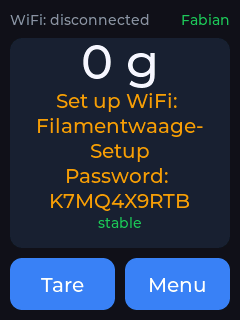
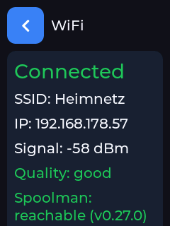
Weboberfläche öffnen und Zugang ändernOpen the web UI and change the credentials
- Öffne
http://filamentwaage.localoder die IP-Adresse im Browser.Openhttp://filamentwaage.localor the IP address in your browser. - Melde dich an mit Name
adminund PasswortFilament.Sign in asadminwith passwordFilament. - Gehe zu Benutzer → Admin und ändere sofort das Admin-Passwort und die Geräte-PIN. Die Seite warnt, solange die Standardwerte aktiv sind.Go to Users → Admin and change the admin password and the device PIN right away. The page warns while the defaults are active.
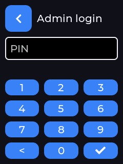
2 · Spoolman
Die smarte Waage braucht eine laufende Spoolman-Instanz (ab Version 0.27) in deinem Netzwerk.The smart scale needs a running Spoolman instance (version 0.27 or newer) on your network.
Nur wiegen, ohne Spoolman? Weboberfläche → System → Betriebsart → Einfache Waage. Dann entfallen dieser Schritt und die Tags: Am Gerät tippst du auf „Filament wiegen“ und wählst „Nur Spule“ oder „Box + Spule“ (siehe Einfache Waage).Just weighing, without Spoolman? Web UI → System → Operating mode → Simple scale. You can then skip this step and the tags: on the device tap “Weigh filament” and pick “Spool only” or “Box + spool” (see Simple scale).
- Adresse eintragen: Weboberfläche → Spoolman, z. B.
http://spoolman.local:7912. Der Status zeigt „erreichbar“, sobald es klappt.Enter the address: web UI → Spoolman, e.g.http://spoolman.local:7912. The status shows “reachable” once it works. - Besitzer-Feld anlegen (optional, für Mehrbenutzerbetrieb): In Spoolman unter Einstellungen → Extra Fields → Spool ein Textfeld mit dem Schlüssel
owneranlegen.Create the owner field (optional, for multi-user): in Spoolman under Settings → Extra Fields → Spool add a text field with the keyowner. - Spulen pflegen: Damit das Restgewicht gespeichert werden kann, braucht jedes Filament in Spoolman ein Füllgewicht (net weight). Das Leerspulengewicht kann an der Spule, am Filament oder am Hersteller stehen.Maintain your spools: to store the remaining weight, every filament in Spoolman needs a net weight. The empty spool weight can be set on the spool, the filament or the vendor.
- Katalog abgleichen: Weboberfläche → Filament-Katalog → „Jetzt abgleichen“ übernimmt Hersteller und Materialien aus Spoolman. Das geschieht auch alle 10 Minuten automatisch.Sync the catalog: web UI → Filament catalog → “Sync now” imports vendors and materials from Spoolman. It also runs automatically every 10 minutes.
3 · Tags vorbereiten3 · Prepare tags
Du brauchst einen Tag pro Spule und einen Tag pro Box (NTAG215 oder NTAG216). Schreiben geht am Gerät nur als Admin: Menü → NFC, Anmeldung mit PIN.You need one tag per spool and one tag per box (NTAG215 or NTAG216). Writing on the device requires the admin: Menu → NFC, sign in with the PIN.
Box-Tag schreibenWrite a box tag
- Menü → NFC → Box.Menu → NFC → Box.
- Mit −5 −1 +1 +5 die Nummer wählen, z. B. BOX-03.Pick the number with −5 −1 +1 +5, e.g. BOX-03.
- Write tippen und den Tag auflegen. „Written“ erscheint in Grün.Tap Write and place the tag. “Written” appears in green.
- Klebe den Tag mittig auf den Boxboden. Der Box-Name wird später zum Lagerort in Spoolman.Stick the tag to the centre of the box bottom. The box name later becomes the location in Spoolman.

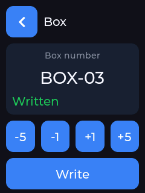
Neuen Spulen-Tag schreibenWrite a new spool tag
- Menü → NFC → Filament.Menu → NFC → Filament.
- Nacheinander Typ, Hersteller und Farbe wählen. Temperaturen kommen aus dem Katalog.Pick type, vendor and colour in turn. Temperatures come from the catalog.
- Write tippen und den Tag auflegen.Tap Write and place the tag.
- Lege die Spule danach auf die Waage. Sie ist Spoolman noch unbekannt und wird im nächsten Schritt zugeordnet.Then hold the spool to the scale. Spoolman does not know it yet, you link it in the next step.
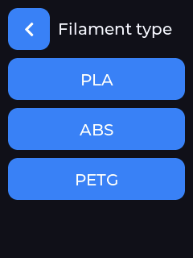
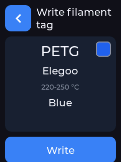
Tag einer Spule zuordnenLink a tag to a spool
Hältst du einen Tag an die Waage, den Spoolman nicht kennt, öffnet sich automatisch die Liste deiner Spoolman-Spulen. Tippe die richtige an, und die Waage verknüpft den Tag in Spoolman und schreibt die Spoolman-ID auf den Tag. Beim nächsten Mal wird die Spule sofort erkannt. Das geht auch über Menü → NFC → Assign spool, solange der Tag aufliegt.If you hold a tag to the scale that Spoolman does not know, the list of your Spoolman spools opens automatically. Tap the right one and the scale links the tag in Spoolman and writes the Spoolman ID to the tag. Next time the spool is recognised instantly. You can also use Menu → NFC → Assign spool while the tag is on the scale.
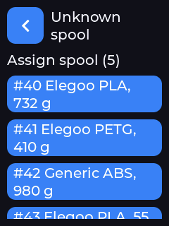
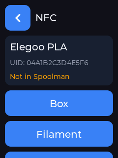
4 · Spule wiegen4 · Weigh a spool
So sieht der Alltag aus. Dauert etwa eine halbe Minute.This is the everyday routine. It takes about half a minute.
Schritt 1 – Spule scannenStep 1 – Scan the spool
Halte die Spule mit dem Tag an die markierte Scan-Zone der Waage. Die Waage zeigt Hersteller, Material, Farbe und das letzte Restgewicht. Die Waage muss dabei leer sein, sonst erscheint „Empty the scale“.Hold the spool with its tag to the marked scan zone. The scale shows vendor, material, colour and last remaining weight. The scale must be empty, otherwise it shows “Empty the scale”.
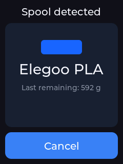
Schritt 2 – Box auflegenStep 2 – Place the box
Stelle die Lagerbox mit Tag auf die Wiegeplatte, am besten so, dass der Tag mittig über der Antenne liegt. Sobald das Gewicht ruhig ist und der Box-Tag gelesen wurde, zeigt die Waage den Box-Namen in Grün. Ab hier werden Spulen-Tags ignoriert.Put the tagged storage box on the platform, ideally with the tag centred over the antenna. As soon as the weight is steady and the box tag is read, the scale shows the box name in green. From here on, spool tags are ignored.
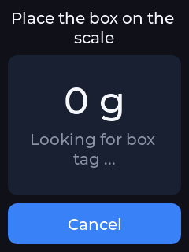
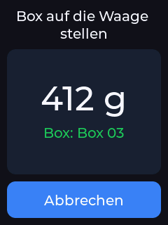
Schritt 3 – Spule in die Box stellenStep 3 – Put the spool in the box
Stelle die Spule in die Box. Die Anzeige zeigt das Gewicht inklusive Box. Sobald es um mindestens 50 g gestiegen und ruhig ist, geht es automatisch weiter. Was sonst in der Box liegt, spielt keine Rolle.Put the spool into the box. The display shows the weight including the box. Once it rose by at least 50 g and is steady, the flow continues automatically. Anything else in the box does not matter.

Schritt 4 – Bestätigen und speichernStep 4 – Confirm and save
- Prüfe Box, Spule und Restgewicht.Check box, spool and remaining weight.
- Fehlt das Leerspulengewicht in Spoolman, stellst du es mit −10 / +10 ein (Start 250 g).If the empty spool weight is missing in Spoolman, set it with −10 / +10 (starts at 250 g).
- Save sendet das Ergebnis an Spoolman. ✕ bricht ab.Save sends the result to Spoolman. ✕ cancels.
- Bei „Saved“ ist alles erledigt. Ist Spoolman offline, steht „Queued“ da und die Waage schickt das Update später nach.“Saved” means done. If Spoolman is offline it says “Queued” and the scale sends the update later.
- Nimm zum Schluss die Box von der Waage. Dann geht sie zurück zu Home.Finally remove the box from the scale. It then returns to Home.
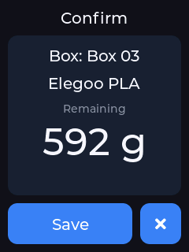

Warnungen: Ist das Restgewicht unter −20 g, meldet die Waage „Check empty spool weight“ und speichert nicht. Liegt es zwischen −20 und 0 g, wird auf 0 gesetzt. Ist es über dem Anfangsgewicht + 50 g, musst du das Speichern bestätigen. Jeder Schritt bricht nach 120 s ohne Aktion ab.Warnings: if the remaining weight is below −20 g the scale reports “Check empty spool weight” and does not save. Between −20 and 0 g it is set to 0. Above the initial weight + 50 g you must confirm saving. Every step times out after 120 s of inactivity.
Nur wiegen und TaraJust weighing and tare
Auf Home ist die Waage eine normale Küchenwaage. Tara nullt sie. Tara dürfen der Admin und Benutzer mit Tara-Recht. Über 4500 g warnt die Waage vor Überlast, die Zelle verträgt 5 kg.On Home the scale works like a normal kitchen scale. Tare zeroes it. Tare is allowed for the admin and users with the tare permission. Above 4500 g the scale warns about overload, the cell is rated for 5 kg.
5 · Benutzer5 · Users
- Anlegen: Weboberfläche → Benutzer → Name eintragen. Optional eine PIN (4 bis 6 Ziffern) für den Webzugang setzen.Create: web UI → Users → enter a name. Optionally set a PIN (4 to 6 digits) for web access.
- Tag schreiben: Beim Benutzer auf „Tag schreiben“ klicken und einen neuen Tag auflegen.Write a tag: click “Write tag” on the user and place a new tag.
- Anmelden am Gerät: Benutzer-Tag an die Waage halten. Der Name steht oben rechts. Danach wird er bei jeder Wägung als Besitzer in Spoolman eingetragen und die Oberfläche kommt in seiner Sprache.Sign in on the device: hold the user tag to the scale. The name shows at the top right. From then on they are recorded as the owner in Spoolman and the interface uses their language.
- Abmelden: auf den Namen oben tippen, oder die Waage meldet nach 15 Minuten ohne Aktion automatisch ab.Sign out: tap the name at the top, or the scale signs out automatically after 15 minutes of inactivity.
- Rechte: Der Admin kann pro Benutzer Tara und Filament (Katalog pflegen) freigeben. Das Konto
genericdarf nur wiegen und NFC lesen.Permissions: the admin can grant Tare and Filament (maintain the catalog) per user. Thegenericaccount may only weigh and read NFC.
6 · Kalibrieren6 · Calibrate
Beim ersten Einsatz und nach jeder mechanischen Änderung. Du brauchst ein Gewicht, dessen Masse du kennst (100 g oder mehr, je schwerer, desto besser).On first use and after any mechanical change. You need a weight whose mass you know (100 g or more, the heavier the better).
- Menü → Einstellungen (Admin) → Calibration.Menu → Settings (admin) → Calibration.
- Wiegeplatte leeren und Tare & continue tippen.Empty the platform and tap Tare & continue.
- Das bekannte Gewicht auflegen, den Wert mit −50 −10 +10 +50 einstellen und Calibrate tippen.Place the known weight, set its value with −50 −10 +10 +50 and tap Calibrate.
- Prüfe zum Schluss mit einem zweiten Gewicht. Der Faktor bleibt auch nach dem Ausschalten gespeichert.Finally check with a second weight. The factor is kept after power-off.
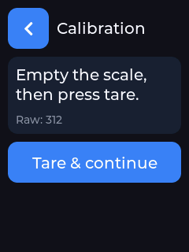
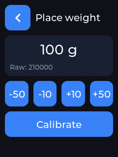
Beim Start nullt sich die Waage automatisch, wenn sie leer ist. Auf Home folgt sie außerdem langsamer Drift (nur bei leerer Waage und unter 2 g Abweichung).At boot the scale zeroes itself if it is empty. On Home it also follows slow drift (only when empty and under 2 g deviation).
7 · Weboberfläche im Detail7 · Web UI in detail
Öffne http://filamentwaage.local (oder die IP-Adresse vom Display) im Browser und melde dich an: Benutzer admin mit dem Admin-Passwort, oder als normaler Benutzer mit Name und PIN. Das Menü liegt als Leiste am oberen Rand (auf dem Handy seitlich scrollbar). Die Oberfläche ist standardmäßig dunkel und wechselt mit der Systemeinstellung deines Geräts in den Hellmodus. Welche Menüpunkte du siehst, hängt von deiner Rolle ab: Kalibrierung, Benutzer, Spoolman, WLAN, Log und System sieht nur der Admin. Der Filament-Katalog ist für den Admin und Benutzer mit Katalog-Recht. Der Knopf „Generic (nur ansehen)“ am Login gibt nur Lesezugriff.Open http://filamentwaage.local (or the IP address shown on the display) in your browser and sign in: user admin with the admin password, or as a normal user with name and PIN. The menu is a bar along the top edge (scrollable sideways on a phone). The interface is dark by default and switches to light mode with your device’s system setting. The menu entries you see depend on your role: calibration, users, Spoolman, Wi-Fi, log and system are admin only. The filament catalog is for the admin and users with the catalog permission. The “Generic (view only)” button at the login gives read access only.
| ÜbersichtOverview | Live-Gewicht mit Status (stabil, Überlast), Knopf Tara, angemeldeter Benutzer, WLAN-, Spoolman- und NFC-Status, zuletzt gescannte Spule, Gerätedaten (IP, Signal, Laufzeit, Speicher). Benutzer ändern hier ihre Sprache und PIN (4 bis 6 Ziffern).Live weight with state (stable, overload), Tare button, signed-in user, Wi-Fi, Spoolman and NFC status, last scanned spool, device data (IP, signal, uptime, memory). Users change their language and PIN here (4 to 6 digits). |
|---|---|
| KalibrierungCalibration | Waage leeren, Tara, Gewicht mit bekannter Masse auflegen, Masse in g eintragen, Kalibrieren. Je schwerer das Gewicht, desto genauer. Der Status zeigt „Kalibriert“ oder „Nicht kalibriert“.Empty the scale, Tare, place a known weight, enter its mass in g, Calibrate. The heavier the weight, the more accurate. The state shows “Calibrated” or “Not calibrated”. |
| BenutzerUsers | Admin: Passwort ändern, Geräte-PIN setzen, Admin-Tag schreiben, Admin-Sperre ein/aus (ohne Sperre darf jeder alles ändern). Generic-Zugang: nur wiegen und NFC lesen, optional mit PIN. Darunter Benutzer anlegen (Name, optional PIN), Rechte vergeben (zum Beispiel Tara oder „Nur wiegen“) und den Benutzer-Tag schreiben.Admin: change password, set device PIN, write admin tag, admin lock on/off (without the lock everyone may change everything). Generic access: weigh and read NFC only, optionally with a PIN. Below: create users (name, optional PIN), assign permissions (for example tare or “Weigh only”) and write the user tag. |
| Filament-KatalogFilament catalog | Typen (mit Temperaturbereich), Hersteller und Farben pflegen. Das sind die Auswahllisten am Gerät unter NFC → Filament. Jetzt abgleichen holt neue Hersteller und Typen aus Spoolman (läuft auch alle 10 Minuten, es wird nichts gelöscht). Änderungen erst mit Katalog speichern übernehmen.Maintain types (with temperature range), vendors and colours. These are the pick lists on the device under NFC → Filament. Sync now pulls new vendors and types from Spoolman (also runs every 10 minutes, nothing is deleted). Apply changes with Save catalog. |
| SpoolmanSpoolman | Server-Adresse eintragen, Speichern, Prüfen. Zeigt die zuletzt gescannte Spule und die Offline-Warteschlange: Jetzt senden schickt gespeicherte Updates, Alle verwerfen löscht sie.Enter the server address, Save, Check. Shows the last scanned spool and the offline queue: Send now sends stored updates, Discard all deletes them. |
| WLANWi-Fi | Verbindungsstatus, Hotspot starten oder beenden, Netzwerke suchen, Name und Passwort eintragen, Speichern & neu starten. WLAN-Daten löschen öffnet beim nächsten Start wieder den Hotspot.Connection state, start or stop the hotspot, scan for networks, enter name and password, Save & restart. Delete Wi-Fi data opens the hotspot again on the next start. |
| LogLog | Live-Log der Waage. Pause hält die Anzeige an, Anzeige leeren räumt auf, Herunterladen speichert das Log als Datei (hilfreich für Fehlermeldungen).Live log of the scale. Pause freezes the view, Clear view tidies up, Download saves the log as a file (useful for bug reports). |
| SystemSystem | Betriebsart: Smarte Waage (Standard, mit Spoolman, Tags und Benutzern) oder Einfache Waage (nur wiegen, ohne Anmeldung und ohne Spoolman). Dazu Sprache, Bildschirmschoner (Dimmen und Aus in Minuten, 0 = nie), Theme der Anzeige (theme.json, Gerät startet nach dem Speichern neu), Wartung (Neustart, Touch-Kalibrierung zurücksetzen).Operating mode: smart scale (default, with Spoolman, tags and users) or simple scale (just weighing, no sign-in, no Spoolman). Also language, screen saver (dim and off in minutes, 0 = never), display theme (theme.json, the device restarts after saving), maintenance (reboot, reset touch calibration). |
8 · Hilfe bei Problemen8 · Troubleshooting
| Tag wird nicht gelesenTag is not read | Näher an die Antenne (unter 4 cm), Metall in der Nähe vermeiden. In Menü → NFC siehst du live, was aufliegt.Move closer to the antenna (under 4 cm) and keep metal away. Menu → NFC shows live what is on the scale. |
|---|---|
| „Nicht in Spoolman““Not in Spoolman” | Der Tag ist noch keiner Spule zugeordnet. Siehe „Tag einer Spule zuordnen“.The tag is not linked to a spool yet. See “Link a tag to a spool”. |
| Speichern schlägt fehlSaving fails | Meist hat das Filament in Spoolman kein Füllgewicht. Trage es dort ein. Die Fehlermeldung von Spoolman erscheint in der Weboberfläche unter Spoolman.Usually the filament has no net weight in Spoolman. Add it there. Spoolman’s error message shows in the web UI under Spoolman. |
| Ausstehende UpdatesPending updates | Spoolman war nicht erreichbar. Die Waage sendet automatisch nach. Manuell: Weboberfläche → Spoolman → „Jetzt senden“.Spoolman was unreachable. The scale retries automatically. Manually: web UI → Spoolman → “Send now”. |
| Wert springt, nie „stable“Reading jumps, never “stable” | Wackelt der Tisch, steht etwas an der Waage an, oder berührt die Wiegeplatte das Gehäuse? Danach neu tarieren.Is the table wobbling, is something touching the scale, or does the platform rub the housing? Tare again afterwards. |
| Gewicht stimmt nichtWrong weight | Neu kalibrieren (Abschnitt 6) und mit zwei Gewichten prüfen.Recalibrate (section 6) and check with two weights. |
| Display bleibt dunkelDisplay stays dark | Der Bildschirmschoner war aktiv. Tippe aufs Display oder halte einen Tag an die Waage.The screen saver was active. Tap the display or hold a tag to the scale. |
| Passwort oder PIN vergessenForgot password or PIN | Per USB-Kabel verbinden (115200 Baud) und admin reset senden. Danach gelten wieder „Filament“ und „1234“.Connect a USB cable (115200 baud) and send admin reset. Password “Filament” and PIN “1234” apply again. |
| WLAN ändern oder verlorenChange or lose Wi-Fi | Weboberfläche → WLAN. Ohne Verbindung startet nach einer Minute wieder der Hotspot. Per USB: wifi set SSID|Passwort oder wifi reset.Web UI → Wi-Fi. Without a connection the hotspot restarts after a minute. Via USB: wifi set SSID|password or wifi reset. |
Mehr Details zu Aufbau und Verdrahtung stehen unter „Bauen & Flashen“, die technischen Hintergründe unter „Funktionen“. Fragen und Fehler gern als Issue auf GitHub.For build and wiring details see “Build & flash”, for technical background see “Features”. Questions and bugs are welcome as issues on GitHub.